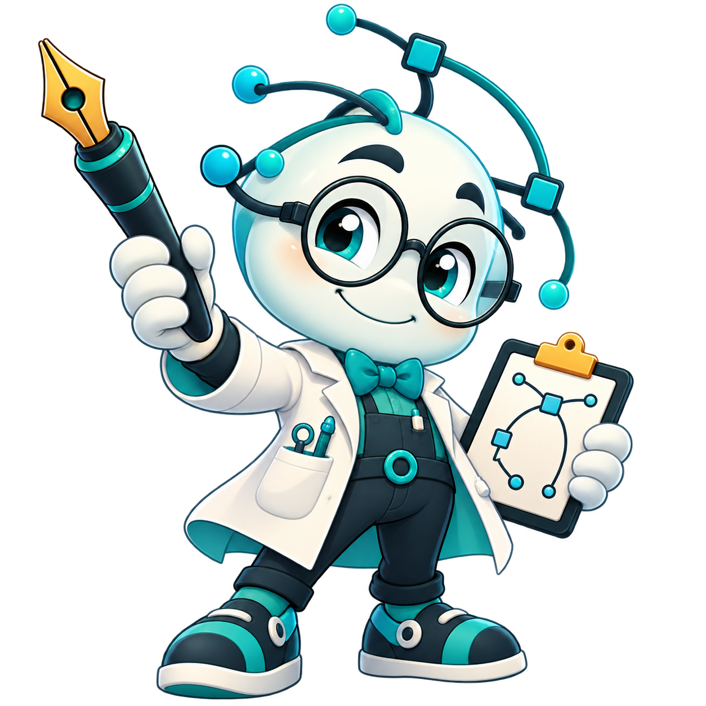

Перетащите EPS сюдаОткрытие файла, диагностика и сохранение истории

Доктор Узелков на связи!Откройте PDF, EPS или SVG, чтобы проверить векторные контуры, исправить узлы и сохранить результат.Ctrl+O — открыть файл
Сравнение после автоисправления
Файл
2D · миллиметры · PDF / EPS / Безье / полилинии
Расчёт в Rust…Изменения заблокированы до завершения.